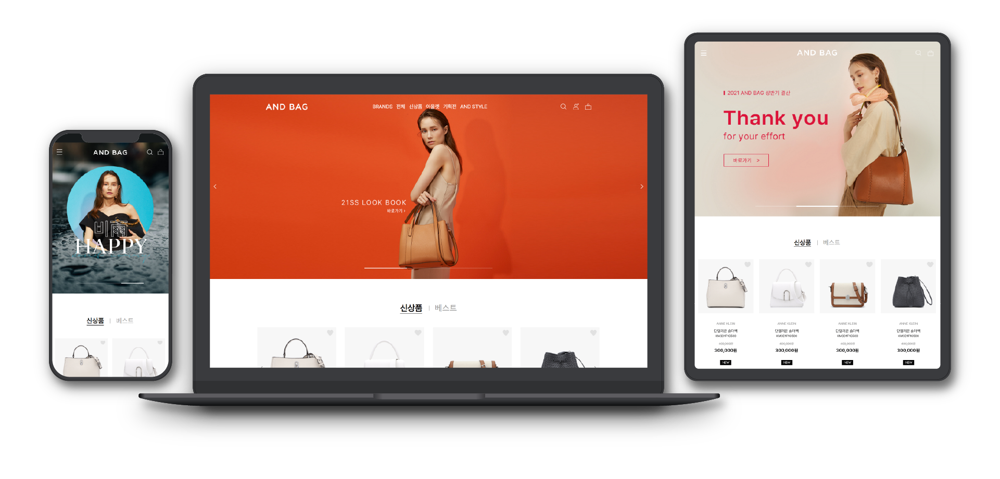
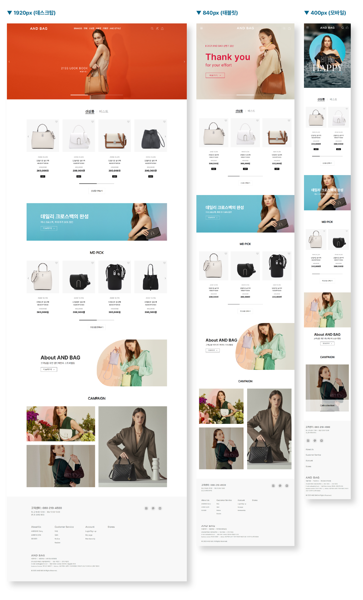

Responsive Web
앤드백 리뉴얼 사이트
사이트 바로가기

구분
반응형 사이트
기여도
디자인 80% + 퍼블리싱 100%
사용 프로그램
포토샵 + 일러스트레이터 + XD + Visual Studio Code
프로젝트 소개
기존 사이트는 반응형 사이트가 아니었고 상품 슬라이드가 너무 많아 스크롤을 많이 내려야되는 단점이 있었습니다.
그래서 반응형으로 퍼블리싱을 하였으며 신상품과 베스트의 슬라이드를 같은 곳에서 바로 볼 수 있도록 탭메뉴를 배치해서 쉽게 볼 수 있도록 했습니다.
또 이미지와 슬라이드가 반복되는 지루함을 탈피하기 위해서 컨텐츠 배너 부분에는 스크롤하면 텍스트와 이미지에 애니메이션을 사용해서 지루함을 없애도록 했습니다.
주요 컬러
사용 폰트
Pretendard 프리텐다드 Regular
Pretendard 프리텐다드 Medium
Pretendard 프리텐다드 Bold
Pretendard 프리텐다드 ExtraBold
디자인 시안
